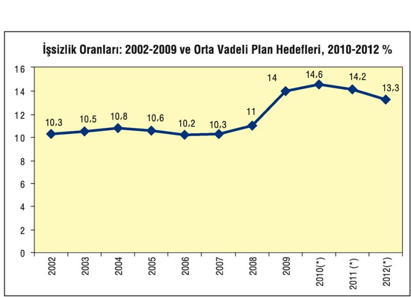

Artan küreselleşme, tarımda da çözülmeler yaratarak daha çok mülksüzleşmiş nüfusu emek ordusu içine kattı. Bunun sonucu olarak, özellikle Merkez ülkelere dayanıklı-dayanıksız tüketim mallarını emek-yoğun teknolojilerle üreten Asya ülkeleri başta olmak üzere çevre ülkeler, ellerinin altında çok düşük ücretlerle çalıştırabilecekleri, örgütsüz, uysallaştırılmış bir işgücünü hazır buldular ve çok düşük ücretlerle üretimlerini hızla artırdılar. Bu durum, Çin, Hindistan gibi ülkelerde hızlı büyüme ile birlikte çok hızlı bir gelir eşitsizliğini de üretti.
Artan küresel rekabet ve dünya ticaret hacmi, teknolojik gelişmeler maliyetler üzerine baskı yaparak işçi başına üretimi, ya da resmi deyişle, küresel işgücü verimliliğini artırdı. Özellikle 2001–2003 döneminde dünya "istihdamsız büyüme" süreci yaşadı. Son 10 yılda küresel eğilim "daha az işgücü ile daha çok üretim" yönündedir.
Ücretlerin sefalet düzeyi, Dünya Bankası verilerinde de görülebiliyor. Günde 2 doların altında bir gelirle yaşayanların çevre-bağımlı ülkelerdeki sayısının 15 yılda pek azalmadığı ve 2,5 milyar kişiyi aştığı görülebiliyor. Bu oran, 2005'e gelindiğinde bile toplam nüfusun yarısına yakındı.
| Çevre-Bağımlı Ülkelerde Günde 2 dolarını Altında Yaşayanlar | ||||
| Milyon Kişi | Yüzde | |||
| 1990 | 2005 | 1990 | 2005 | |
| D.Asya (Çin+) | 1, 273 | 729 | 79, 8 | 38, 7 |
| G.Asya (Hind+) | 702 | 828 | 82, 7 | 73, 9 |
| G.Afrika | 394 | 557 | 76, 2 | 73 |
| L.Amerika | 86 | 91, 3 | 19, 7 | 16, 6 |
| Or-Doğu | 44 | 51, 5 | 19, 7 | 16, 9 |
| Avrupa, O.Asya | 32 | 42 | 6, 9 | 8, 9 |
| Toplam | 2, 756 | 2, 562 | 63, 2 | 47 |
Kaynak: Dünya Bankası
Özetle, 1980'lerden 2008'e uzanan dönemde, küreselleşmeci, piyasacı sistem 2,5 milyar bağımlı ülke ücretlisini günde 2 doların altında bir yaşama talim ettirerek kar ve sermaye birikimi çarkını döndürmeye çalışırken, bu bile 2008 büyük krizine çakılıp kalmasını önleyemedi.
İstikrarlı büyüme altında dahi yeterli ve nitelikli istihdam yaratamayan dünya ekonomilerinde, 2008 dünya ekonomik krizinin yıkıcı etkileri ile birlikte en büyük sorunlardan birinin yine "işsizlik" olacağı görülebiliyor. ILO'ya göre, işsiz sayısı 2000 yılında 170 milyon iken 2008 sonunda 190 milyona çıktı. 2010'da ise iyimser tahminlere göre 200 milyonu, kötümser tahminlere göre 220 milyonu aştı.
ABD'de 2008 sonuna doğru yüzde 6,5'u geçen işsizlik oranı, ekonominin daha da daralması ile 2009'da yüzde 10'u aştı. ABD'deki krizin AB'ye yansımaları, kendisini büyüme oranlarında düşüş ve işsizlikte artışla gösteriyor. AB'de ortalama yüzde 8'i bulan işsizlik oranının birkaç puan daha artabileceğinden endişe ediliyor.
Dünya çapında ekonomik durgunluk beklentileri doğrultusunda ILO, önümüzdeki dönemde Orta Doğu, Kuzey Afrika ve Sahra-altı Afrikası hariç dünya ekonomilerinde ciddi büyüme kayıplarının olacağını öngörüyor.
Çin ve Hindistan başta olmak üzere Asya ülkelerinde de, merkez ülkelerindeki durgunluk sonucu ihracat talebinin azalması ile büyümenin tempo kaybetmesi, bunun istihdama da yansıması, yeni işsizliğin tensikatlarla artması bekleniyor.
Türkiye'nin de özellikle AB ağırlıklı ihracatının azalması ve iç talebin biraz daha daralması ile 2009 daralması yüzde 4,7'yi buldu. Ağır bir dış borç stokunun üstünde oturan Türkiye'de yüksek faizle afyonlanmış ekonominin yüksek faizin bile sıcak parayı tutmaya yetmemesi sonucu, iç ve dış talep hızla düştü ve ilk elde sanayide kapasite kullanım oranları geriledi, hızla tensikatlara gidildi. İstihdam yaratmayan büyümenin bile artık teklemeye başladığı koşullarda, biriken işsizlere bir de işyerlerinden çıkarılan yeni işsizlerin eklenmesi ile işsizlik sorunu gündemin ilk maddesi oldu.
"Büyüdüğü" yıllarda bile yeterince istihdam sağlayamayan ve işsizlik artışını önleyemeyen Türkiye ekonomisinde önceki yıllarda şişen balonun patlamasıyla birlikte işsizlikte de tam bir patlama yaşandı. Yıllık ortalama işsizlik oranın 2009 yılı için Türkiye tarihinde bir rekor olan yüzde 14'e ulaştı.

(*) Orta Vadeli Program, Hükümet tahmini
2009 yılında önemli ölçüde büyüyen işsizlik sorununun, ekonomide beklenen büyümeye rağmen bu yıl ve sonraki yıllarda da büyük önemini koruyacağı öngörülüyor. 2010 yılında yüzde 14,6 olması beklenen işsizlik oranının 2011 yılında yüzde 14,2'de 2012 yılında ise yüzde 13,3'te kalması bekleniyor.